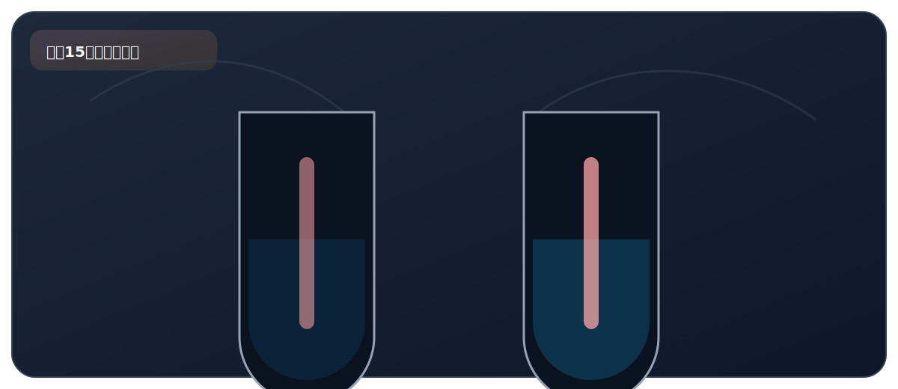

实验十五、探究铁钉生锈的条件

来自 PDF《化学实验基础知识及课本实验总结》的整理。建议：先读"实验原理"，再背"操作顺序"，最后用"误差分析/注意事项"拿分。
实验目标
- 探究铁生锈条件：水和氧气缺一不可；理解防锈方法。
核心原理
- 铁锈主要成分为 Fe2O3·xH2O（含水氧化铁），铁生锈需要水和氧气同时作用。
关键步骤（怎么做）
- A 试管：铁钉放在蒸馏水中（同时接触水和空气）——对照组。
- B 试管：铁钉浸没在煮沸后冷却的蒸馏水中，水面上加一层植物油（隔绝氧气）。
- C 试管：铁钉放在干燥空气中（放 CaCl2 干燥剂吸收水分）。
- 放置一周后观察铁钉生锈情况。
现象（看到什么）
- A 试管中铁钉明显生锈（出现红棕色锈迹）。
- B 试管中铁钉无明显变化。
- C 试管中铁钉无明显变化。
高频考点（怎么拿分）
- A 与 B 对比：变量是氧气——说明铁生锈需要与氧气接触。
- A 与 C 对比：变量是水——说明铁生锈需要与水接触。
- A、B、C 综合：铁生锈需要水和氧气同时参与。
- 防锈方法的本质：隔绝水或氧气（或两者都隔绝）。常见方法：涂油、刷漆、电镀、搪瓷、烤蓝、制成合金（不锈钢）等。
- B 中煮沸蒸馏水的目的：除去水中溶解的氧气。植物油的作用：隔绝空气中的氧气。
- C 中 CaCl2 的作用：作干燥剂，吸收空气中的水分。
PDF摘录（原文提取，供对照）
要点
- 铁锈的主要 Fe2O3·xH2O 成分
化学方程式
- 结果分析
实验现象
- A 试管中铁钉生锈；B、C 试管中铁钉无明显变化。
实验结论
- 试管 A 和试管 B 对比说明铁钉生锈需要与氧气接触；
- 试管 A 和试管 C 对比说明铁钉生锈需要与水接触。
- 通过比较试管 A、B、C 说明铁钉生锈需要与氧气和水同时接触。
- 使用蒸馏水的目的：蒸馏水更纯净，可以排除水中其他可溶性杂质 的干扰。
- 实验分析 煮沸蒸馏水：出去水中溶解的氧气。
- B 中植物油的作用：隔绝氧气。
- C 中干燥剂（此处为 CaCl2）的作用：吸收空气中的水分。